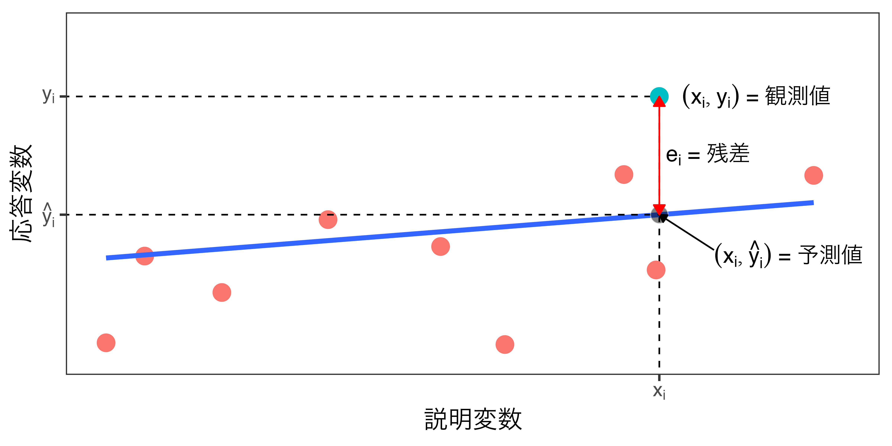

マクロ政治データ分析実習
第8回 線形回帰分析（1）
関西大学総合情報学部
2023-11-16
授業開始前に
すぐに実習できるように準備しておきましょう。
- JDCat分析ツールを起動しておいてください。
- 本日授業用のプロジェクトを作成するか、既存のプロジェクトを開いてください。
- LMSから実習用データ（2つ）をダウンロードしておいてください。
- ダウンロードしてデータをプロジェクト・フォルダーにアップロードしてください。
- プロジェクト・フォルダー内に
Dataフォルダーを作成し、そこにアップロードしましょう。
- プロジェクト・フォルダー内に
- 実習用コードを入力するスクリプト、またはQuarto（or R Markdown）ファイルを開き、以下のコードを入力&実行してください。
- トラブルが生じた場合、速やかにTAを読んでください。
- 時間に余裕があれば、スライド内のコードも書いておきましょう。
線形回帰: 散布図への直線の当てはめ
サンプルデータの読み込み
# A tibble: 69 × 5
Year Month Temperature Icecream Beer
<dbl> <dbl> <dbl> <dbl> <dbl>
1 2016 1 6.1 464 452
2 2016 2 7.2 397 584
3 2016 3 10.1 493 750
4 2016 4 15.4 617 835
5 2016 5 20.2 890 794
6 2016 6 22.4 883 961
7 2016 7 25.4 1292 1025
8 2016 8 27.1 1387 1021
9 2016 9 24.4 843 748
10 2016 10 18.7 621 730
# ℹ 59 more rows| 変数 | 説明 |
|---|---|
Year |
年 |
Month |
月 |
Temperature |
東京都の平均気温 (℃) |
Icecream |
一人あたりアイスクリーム支出額 (円) |
Beer |
アサヒ・スーパードライの販売量 (万箱) |
気温とビール売上の関係
TemperatureとBeerの相関係数（\(\alpha\) = 0.05）
Pearson's product-moment correlation
data: beer_df$Temperature and beer_df$Beer
t = 2.0899, df = 67, p-value = 0.04042
alternative hypothesis: true correlation is not equal to 0
95 percent confidence interval:
0.01137629 0.45729570
sample estimates:
cor
0.2473909 - 相関係数は約0.25であり、\(p\)値は0.04であるため、統計的に有意な正の相関関係があると判断できる。
気温とビール売上の関係
回帰直線
回帰直線（regression line）: 二変数の散布図を描く場合、その関係も最も正確に表す直線
- 前ページの青い直線（一次関数）
- 切片が576.227、傾きが7.355の直線
- ビールの販売量 = 576.227 + 7.355\(\times\)気温
回帰直線の特徴
- 二次元平面上に描ける直線は無数にあるが、回帰直線は「直線と点のズレが最も小さい」直線
- 説明変数（原因）が変わると応答変数（結果）はどう変化するかを示す。
- 回帰直線は必ず（説明変数の平均値, 応答変数の平均値）を通過する
一次関数
\(y = \alpha + \beta x\)の一次関数
- \(\alpha\): 切片（\(x\) = 0の場合の\(y\)の値）
- \(\beta\): 傾き（\(x\)が1増加した場合の\(y\)の増加量）
回帰直線を引くことは
- 一次関数（\(y = \alpha + \beta x\)）において\(x\)と\(y\) がそれぞれ説明変数、応答変数の場合、点とのズレが最も小さい直線が描ける\(\alpha\)と\(\beta\)の値を明らかにする（=推定）すること
- \(\rightarrow\) 回帰分析 (regression analysis)
- どのように\(\alpha\)と\(\beta\)の値を推定するか
- 最小二乗法（least squares methods）
- Ordinary Least Squaresの略、OLSと呼ばれることも多い
最小二乗法（OLS）
残差
二変数の相関係数が1、または-1の場合、散布図上の点はすべて直線上に乗る
- しかし、実際の場合、多くの点が直線上に乗らない。
観測値、予測値、残差
- 観測値: 実際に観察されている値
- 2016年5月（
beer_dfの5行目）の「気温は20.2度であり、ビールの販売量は794万箱」である。 - \(x_5\) = 20.2 / \(y_5\) = 794
- 2016年5月（
- 予測値: 推定された一次関数に観測値における説明変数を代入した場合に得られる値
- 「ビールの販売量の予測値 = 576.227 + 7.355\(\times\)気温」であるため、気温20.2度を外挿すると、約725万箱となる
- 576.227 + 7.355 \(\times\) 20.2 = 724.798
- 794は応答変数の観測値（=\(y\)）であり、724.798は予測値であり、主に\(\hat{y}\)（ワイ・ハット）と表記する。
- 予測値は回帰直線によって予測された値であるため、必ず回帰直線上に乗る
- 回帰直線は予測値の集合として考えることも可能
- 「ビールの販売量の予測値 = 576.227 + 7.355\(\times\)気温」であるため、気温20.2度を外挿すると、約725万箱となる
- 残差（residual）：残差と予測値の距離（\(e_i = y_i - \hat{y}_i\)）
観測値、予測値、残差

最小二乗法
すべての観測値とそれぞれの予測値との距離（=残差; \(e_i\)）の二乗和が最も小さくなる直線を推定
推定方法
残差（\(e_i\)）の二乗和が最小となる\(\alpha\)と\(\beta\)を推定する方法
- 行列で解く: \((X^{\top}X)^{-1}X^{\top}y\)
- 微分方程式で解く
- (説明変数が一つのみの場合) 公式で解く
- \(\beta = \frac{\sum (x_i - \bar{x}) (y_i - \bar{y})}{\sum (x_i - \bar{x})} = \frac{\text{Cov}_{x, y}}{u_x}\) ; \(\alpha = \bar{y} - \beta \bar{x}\)
- 回帰直線は必ず\((\bar{x}, \bar{y})\)を通過する特徴を利用
- いずれも面倒なので、パソコンに任せる（
lm()関数の利用）
lm()関数の利用
- 第一引数はformula
応答変数 ~ 説明変数- 応答変数と説明変数はチルダ (
~)で区切る
- 第二引数は
data = データオブジェクト名 - 推定した結果を別途のオブジェクトとして格納
- 以下の例では
beer_fit
- 以下の例では
- 推定結果を確認するには
summary()関数を使用
# 応答変数 (結果): ビールの販売量
# 説明変数 (原因): 気温
beer_fit <- lm(Beer ~ Temperature, data = beer_df)
summary(beer_fit)
Call:
lm(formula = Beer ~ Temperature, data = beer_df)
Residuals:
Min 1Q Median 3Q Max
-392.8 -169.1 -10.8 115.1 677.2
Coefficients:
Estimate Std. Error t value Pr(>|t|)
(Intercept) 576.227 63.941 9.012 3.64e-13 ***
Temperature 7.355 3.519 2.090 0.0404 *
---
Signif. codes: 0 '***' 0.001 '**' 0.01 '*' 0.05 '.' 0.1 ' ' 1
Residual standard error: 217.1 on 67 degrees of freedom
Multiple R-squared: 0.0612, Adjusted R-squared: 0.04719
F-statistic: 4.368 on 1 and 67 DF, p-value: 0.04042結果の解釈
(Intercept): 切片 = \(\alpha\)- 点推定値は576.227
Temperature: 傾き = \(\beta\)- 点推定値は7.335
- 意味：気温が1度上がると、ビールの販売量は7.355万箱上がる。
- 単位に注意：
Beerは「万箱」単位であるため、「Beerの値が1上がる」ことは「ビール販売量の予測値が1万箱上がる」ことを意味する。
- 単位に注意：
単回帰と重回帰
実習データの読み込み
# A tibble: 47 × 6
ID Pref Jimin Zaisei Over65 Primary
<dbl> <chr> <dbl> <dbl> <dbl> <dbl>
1 1 Hokkaido 32.8 0.435 29.2 7.00
2 2 Aomori 40.4 0.341 30.2 12.0
3 3 Iwate 34.9 0.352 30.5 10.6
4 4 Miyagi 36.7 0.614 25.9 4.36
5 5 Akita 43.5 0.309 33.9 9.62
6 6 Yamagata 42.5 0.351 30.9 9.19
7 7 Fukushima 33.8 0.533 28.8 6.48
8 8 Ibaraki 40.6 0.637 27.1 5.64
9 9 Tochigi 38.8 0.640 26.3 5.52
10 10 Gunma 42.1 0.625 28.1 4.96
# ℹ 37 more rows| 変数 | 説明 |
|---|---|
ID |
都道府県ID |
Pref |
都道府県名 |
Jimin |
2016年参院選の自民得票率 (比例) |
Zaisei |
2016年度財政力指数 |
Over65 |
65歳以上人口割合 |
Primary |
第一次産業従事者割合 |
重回帰分析
重回帰分析（multiple regression）：説明変数が2つ以上の回帰分析
- 単回帰分析（single regression）：説明変数が1のみ回帰分析
- 単回帰分析同様、
lm()関数を使用するが、説明変数を+でつなぐ - 応答変数が\(y\)、説明変数が\(x\)と\(z\)の場合の回帰式
\[ \hat{y} = \alpha + \beta_1 x + \beta_2 z \]
- 単回帰分析同様、残差（\(e\)）の自乗和が最小となる\(\alpha\)、\(\beta_1\)、\(\beta_2\)を推定
参考）単回帰分析と重回帰分析の違い
単回帰分析において残差は「観測値と回帰直線間の距離」であるが、重回帰分析の場合、「観測値と回帰平面間の距離」が残差となる。説明変数が2つの場合は、回帰平面、3つ以上の場合は回帰超平面となる。
問題設定
2016年行われた参院選における自民党の得票率（都道府県）はどのような要因で説明出来るだろうか。財政的に豊かではない地域が国からの補助金への依存度が高く、高齢者ほど保守的であることは先行研究において指摘されている。ならば、自民党の得票率は、その都道府県の財政力指数と高齢者の割合で説明できるだろうか。
- 応答変数（結果）: 2016年参院選における都道府県ごとの自民党得票率（比例区）
- 説明変数1（原因1）: 2016年度の都道府県ごとの財政力指数
- 説明変数2（原因2）: 2015年度の都道府県ごとの65歳以上人口の割合
- 残差（\(e = y - \hat{y}\)）の自乗和が最小となる\(\alpha\)、\(\beta_1\)、\(\beta_2\)を推定
lm()関数による重回帰分析
複数の説明変数を+で区切るだけ
Call:
lm(formula = Jimin ~ Zaisei + Over65, data = pref_df)
Residuals:
Min 1Q Median 3Q Max
-13.6140 -2.8382 0.8015 3.1558 9.6759
Coefficients:
Estimate Std. Error t value Pr(>|t|)
(Intercept) 15.8910 11.3983 1.394 0.1703
Zaisei -4.5472 4.8211 -0.943 0.3507
Over65 0.8810 0.3366 2.617 0.0121 *
---
Signif. codes: 0 '***' 0.001 '**' 0.01 '*' 0.05 '.' 0.1 ' ' 1
Residual standard error: 4.6 on 44 degrees of freedom
Multiple R-squared: 0.3135, Adjusted R-squared: 0.2823
F-statistic: 10.05 on 2 and 44 DF, p-value: 0.0002545結果の解釈
自民党の得票率の予測値 = 15.891 - 4.547 \(\times\) 財政力指数 + 0.881 \(\times\) 65歳以上人口の割合
| term | estimate | std.error | p.value |
|---|---|---|---|
| (Intercept) | 15.891 | 11.398 | 0.170 |
| Zaisei | −4.547 | 4.821 | 0.351 |
| Over65 | 0.881 | 0.337 | 0.012 |
- 切片（
Intercept）の係数：15.891- 財政力指数が0、かつ65歳以上人口の割合が0%の都道府県の場合、自民党得票率の予測値は15.891%である。
- ただし、財政力指数が0、65歳以上人口の割合が0%の都道府県はあり得ため、この15.891%に大きな意味はない。
- 財政力指数（
Zaisei）の係数：-4.547- 財政力指数が1上がると、その都道府県の自民党得票率の予測値は4.547%p下がる。
- 参考) 財政力指数の最小値は0.252、最大値は1.101
- 65歳以上人口の割合（
Over65）の係数：0.881- 65歳以上人口の割合が1%p上がると、その都道府県の自民党得票率の予測値は0.881%p上がる。
- 「1%」でなく「1%ポイント」であることに注意
係数間の比較はダメ!
財政力指数の係数は-4.547、65歳以上人口の割合の係数は0.881
- 係数の大きさ（=絶対値）は「財政力指数」の方が大きい
- この結果から「高齢者割合よりも、その都道府県の財政力指数の方が、自民得票率に与える影響が大きい」と解釈出来るだろうか。
- \(\rightarrow\) できない
- -4.547は財政力指数が1上がる場合の自民得票率の変化量
- 0.881は65歳以上人口の割合が1%p上がる場合の自民得票率の変化量
- なぜ?
- 2つの説明変数の単位は異なるため、直接比較することはできない。
- 「財政力指数が1上がる」ことと、「65歳以上人口の割合が1%p上がる」ことの意味は大きく異る。
- 財政力指数が1上がることは島根（0.252）の財政状況が東京（1.100）並に改善されること。
- 高齢者の割合が1%p増えることはあり得るが、財政力指数が1上がることはなかなかあり得ない。
単回帰と重回帰の違い
| term | estimate | std.error | statistic | p.value |
|---|---|---|---|---|
| (Intercept) | 15.891 | 11.398 | 1.394 | 0.170 |
| Zaisei | −4.547 | 4.821 | −0.943 | 0.351 |
| Over65 | 0.881 | 0.337 | 2.617 | 0.012 |
重回帰分析\(\neq\)複数の単回帰分析
| モデル1 | モデル2 | モデル3 | |
|---|---|---|---|
切片（Intercept） |
15.819 | 45.291 | 7.518 |
財政力指数（Zaisei） |
-4.547 | -13.012 | |
65歳以上人口の割合（Over65） |
0.881 | 1.094 |
モデル1: 自民党の得票率の予測値 = 15.891 - 4.547 \(\times\) 財政力指数 + 0.881 \(\times\) 65歳以上人口の割合
モデル2: 自民党の得票率の予測値 = 45.291 - 13.012 \(\times\) 財政力指数
モデル3: 自民党の得票率の予測値 = 7.518 + 1.094 \(\times\) 65歳以上人口の割合
- 単回帰分析における係数と重回帰分析の係数は一致しない。
- 重回帰分析の係数は「他の説明変数を一定に保ったとき、ある説明変数の増加が応答変数の値をどの程度変化させるか」を示す
- 他の説明変数をコントロール (統制)したときに説明変数が応答変数に与える影響
- リサーチデザインの講義における「原因以外の重要な要因」（第2・3回）
- 具体的な意味は教科書pp.215-218を参照
変数の統制

- \(Y\)：自民党の得票率
- \(X\)：財政力指数
- \(Z\)：65歳以上人口の割合
- 財政力指数が高い地域において自民得票率が低い場合、それは財政力指数の影響でなく、高齢者割合の影響かも知れない。
- 高齢者割合が同じ場合、財政力指数が自民得票率に与える影響は?
- =「高齢者割合を統制する」
決定係数
決定係数
モデルの当てはまりの良さを評価する指標
- 決定係数（\(R^2\)）、または自由度調整済み決定係数（adjusted \(R^2\)）
\[ R^2 = \frac{\sum(\hat{y}_i - \bar{y})^2}{\sum(y_i - \bar{y})^2} = \frac{\text{回帰変動}}{\text{全変動}} \]
- 観測された応答変数のばらつき（=全変動）のうち何%が予測値のばらつき（=回帰変動）で説明されるか。
- 予測値の分散を観測値の分散で割った値と一致
- 分子の\(\bar{y}\)は\(\bar{\hat{y}}\)にしても良いが、\(\bar{\hat{y}} = \bar{y}\)
- 予測値の変動が観測値の変動と一致する場合、\(R^2\)は1となる。
- 「このモデルで応答変数の変動を完璧に説明できる。」
- 決定係数が0.7なら…
- 「このモデルで応答変数の変動の約70%が説明できる。」
- 決定係数は0以上1以下
決定係数の計算方法（1）
[1] 38.71447[1] 32.82 40.44 34.90 36.68 43.46 42.49 1 2 3 4 5 6
39.62745 40.95864 41.15184 35.87845 44.38813 41.51710 [1] 0.3135332決定係数の計算方法（2）
参考）自由度調整済み決定係数
説明変数が増えると決定係数は必ず大きくなるため、説明変数の数で決定係数にペナルティーを与える。
- 回帰分析のモデルを評価する際、決定係数よりも以下の自由度調整済み決定係数を用いる。
\[ \text{Adjusted } R^2 = 1 - \frac{(1 - R^2)(n - 1)}{(n - k - 1)} \]
- \(R^2\)は決定係数、\(n\)は標本サイズ、\(k\)は説明変数の数
決定係数の確認方法
Call:
lm(formula = Jimin ~ Zaisei + Over65, data = pref_df)
Residuals:
Min 1Q Median 3Q Max
-13.6140 -2.8382 0.8015 3.1558 9.6759
Coefficients:
Estimate Std. Error t value Pr(>|t|)
(Intercept) 15.8910 11.3983 1.394 0.1703
Zaisei -4.5472 4.8211 -0.943 0.3507
Over65 0.8810 0.3366 2.617 0.0121 *
---
Signif. codes: 0 '***' 0.001 '**' 0.01 '*' 0.05 '.' 0.1 ' ' 1
Residual standard error: 4.6 on 44 degrees of freedom
Multiple R-squared: 0.3135, Adjusted R-squared: 0.2823
F-statistic: 10.05 on 2 and 44 DF, p-value: 0.0002545summary()関数から出力される推定結果の下段
- 決定係数: 0.3135
- Multiple R-squared
- 自由度調整済み決定係数: 0.2823
- Adjusted R-squared
- 説明変数が多くなると「Multiple R-squared（決定係数）」は必ず大きくなる
- 応答変数と無関係な説明変数を入れても必ず大きくなるため、あまり参考にならない
- 「Adjusted R-squared」を利用する
- 財政力指数と高齢者の割合を説明変数とした場合、自民得票率の約28%が説明できる。
「望ましい」決定係数は存在しない
「決定係数は0.XX以上が望ましい」といった基準は存在しない
- 自然科学、経済学などにおける時系列分析の場合、0.9を超える場合も多くある。
- 国、人間などを扱う社会科学の場合、0.1程度やその以下もしばしばある。
- 近年の社会科学では決定係数をあまり重要視しない
- 調整済み決定係数が負になる場合もあるが、さすがにこれは良くないかも
- モデルを評価する一つの目安に過ぎないことに注意すること。
- 応答変数が同じ複数のモデルがある場合、比較の指標としては意義があるものの、決定係数以外にも様々な指標がある（AIC、BIC、WAIC、Cohenの\(\kappa\)など）。
モデル間比較（{modelsummary}パッケージ）
library(modelsummary) # ない場合はinstall.packages("modelsummary")でインストール
modelsummary(list(jimin_fit1, jimin_fit2, jimin_fit3))| (1) | (2) | (3) | |
|---|---|---|---|
| (Intercept) | 15.891 | 45.291 | 7.518 |
| (11.398) | (2.049) | (7.141) | |
| Zaisei | −4.547 | −13.012 | |
| (4.821) | (3.800) | ||
| Over65 | 0.881 | 1.094 | |
| (0.337) | (0.249) | ||
| Num.Obs. | 47 | 47 | 47 |
| R2 | 0.314 | 0.207 | 0.300 |
| R2 Adj. | 0.282 | 0.189 | 0.284 |
| AIC | 281.7 | 286.5 | 280.7 |
| BIC | 289.1 | 292.1 | 286.2 |
| Log.Lik. | −136.869 | −140.269 | −137.340 |
| F | 10.048 | 11.724 | 19.254 |
| RMSE | 4.45 | 4.79 | 4.50 |